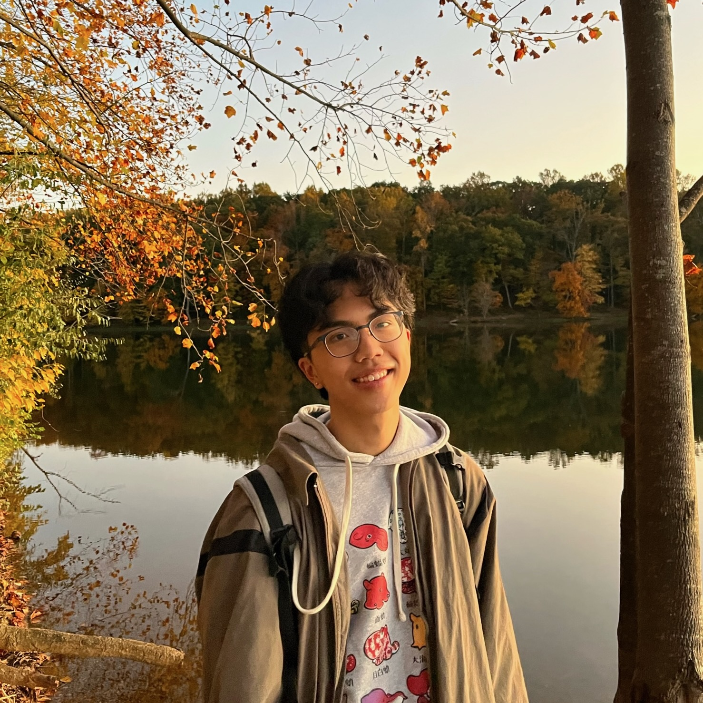

Simon Wang
who am I?
Hello! I'm Simon!
I just recently completed my Master's in Computer Science at UMD (May 2025), and I'm so excited to use what I've learned over the past few years to make a real impact!
do I have interests?
Aside from creating AI tools, studying deep learning, and developing webpages (like this one), in my free time I love to...
- Create art | digital illustration & oil painting are my faves!
- Design & 3D print cool things w/ my Bambu Labs P1S!
- Run | as a former track athlete that doesn't run enough anymore...
- Play video games | Minecraft, Apex Legends, Genshin, and more
pursuing research interests in:
Generative AI
I recently got my Master's in Computer Science from the University of Maryland (UMD), with a focus on Applied AI/ML. I love applying what I study to create impactful tools that show the amazing potential of technology to engage and assist everyone! Check out the links below and look through this site to find out more. Thanks :)
My Skills
Programming languages, AI/ML tools, and software I've picked up over the years!